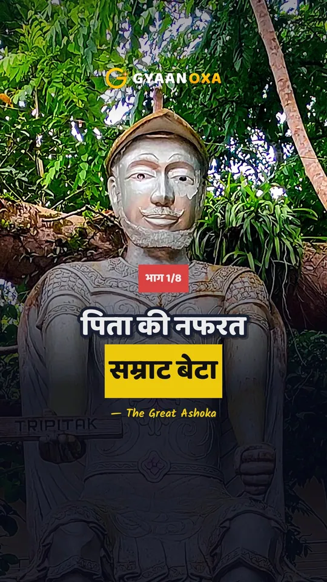
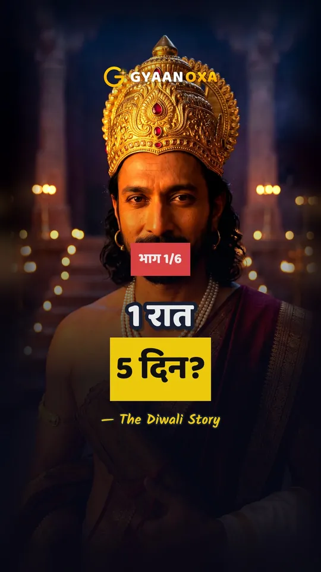
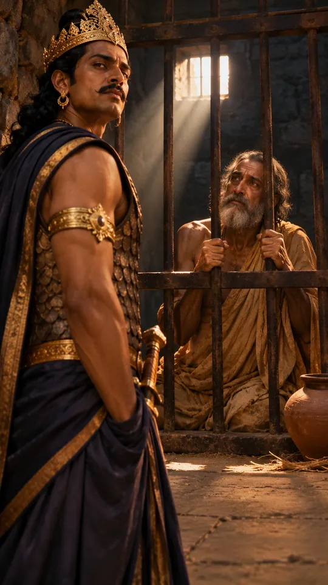

भारत के
अनसुने सच
इतिहास•विज्ञान•रहस्य
True stories from Indian history that most of us never heard in school. Kings, wars, festivals and old mysteries, told in everyday Hindi, with the sources named.
Full videos
Documentaries
The whole story in one sitting. Where the old books disagree, you hear both sides.


Series
Stories told part by part
A big story comes out one short part each evening. After the last part, the whole thing comes out as one full video.

Ashoka
The unwanted prince, the fight for the throne, Kalinga, and the emperor who had his regret carved in stone.

Diwali, 5 days
Dhanteras, Choti Diwali, Lakshmi Puja, Govardhan and Bhai Dooj. One old story for each day.

Ajatashatru
The prince of Magadha who locked up his own father, Bimbisara, and later went to the Buddha.
Starts 10 NovemberComing next
नई कहानियाँ, इसी हफ्ते
What goes live next on YouTube and Instagram.
धनतेरस से भाई दूज तक: दिवाली के 5 दिन की कथा
दिवाली की रात, 3 धर्मों की 3 कहानियाँ
गोवर्धन पूजा: 7 दिन छोटी उंगली पर पहाड़?
भाई दूज का यमराज से क्या रिश्ता?
पिता को कैद कर मगध की गद्दी?
एक हाथी और हार के लिए जंग?
छठ पूजा की कहानी
दो ग्रंथ, दो अजातशत्रु
Festival and special-day topics are planned and may change.
Shorts
One story in a minute
New ones first, then the ones people liked most.
Latest


Popular


Blog
पढ़िए पूरी कहानी
The longer version of each video, with dates, sources and the questions people ask.

पिता को कैद करने वाला राजा बुद्ध के आगे क्यों झुका?
मगध के बागी बेटे अजातशत्रु की कहानी। पिता बिम्बिसार की कैद, वैशाली का युद्ध, जैन और बौद्ध ग्रंथों के दो अलग रूप और बुद्ध के सामने पछतावा।

चंडाशोक या धम्मशोक, सम्राट अशोक का अनसुना सच
कलिंग में 1,00,000 मौतें, 99 भाइयों की कथा और 84,000 स्तूप। सम्राट अशोक के इतिहास में किंवदंती कहाँ खत्म होती है और सच कहाँ से शुरू होता है, पढ़िए।

दिवाली के 5 दिन, 5 कहानियाँ
दिवाली पूरे 5 दिन चलती है। धनतेरस से भाई दूज तक हर दिन की अपनी कहानी है, जिसमें यमराज, कृष्ण, महावीर और टैगोर तक आते हैं।

जब औरंगज़ेब ने दीवाली पर रोक लगाई, दीपावली का पूरा इतिहास
दीपावली के नाम का अर्थ, इसकी शुरुआत, औरंगज़ेब की लगाई रोक, और जैन, सिख व बंगाली परंपराओं में इसके अलग रंग, सब एक जगह।

चंद्रगुप्त मौर्य, जिनका जन्म और अंत दोनों रहस्य हैं
मौर्य साम्राज्य के संस्थापक चंद्रगुप्त मौर्य का जन्म, चाणक्य से मुलाकात, नंदों पर जीत और उनका रहस्यमय अंत। सच और किंवदंती को अलग रखकर पूरी कहानी।

रावण की पूजा करने वाले लोग और विजयादशमी का अनसुना सच
विजयादशमी की पूरी कहानी, राम-रावण और दुर्गा-महिषासुर की कथा, रावण दहन का अनिश्चित इतिहास और देश भर की अनोखी परंपराएँ।
About
What is Gyaanoxa?
Gyaanoxa (ज्ञानोक्सा) is a Hindi channel about the bits of Indian history that textbooks skip: kings and wars, festivals, scientists and a few mysteries.
Sources first
Facts come from history books, inscriptions and encyclopaedias. Legends are told as legends.
Simple Hindi
The Hindi we speak at home. A story in a minute, or the full picture in a longer video.
Credit where due
Every picture's artist and licence is listed in the video description.
Every evening
New Shorts at 7 PM IST, and festival stories a day before the festival.
Contact
कोई कहानी सुझानी है?
Got a topic idea, spotted a mistake, or want to work together? Write to us. A new story comes out every evening.